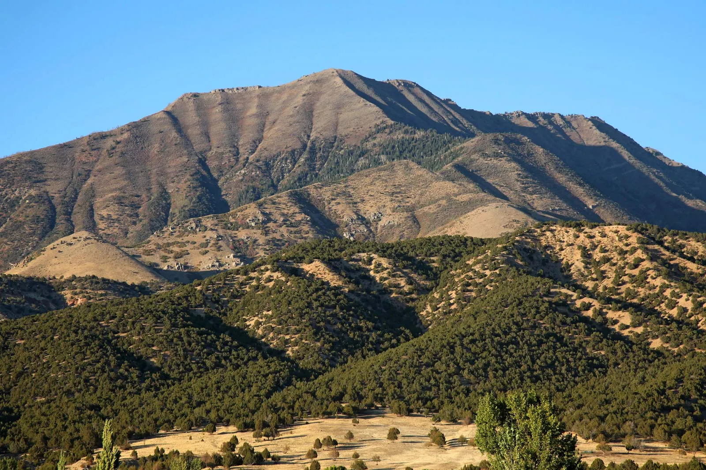

Mountains & Desert
Jordan’s Hidden Places
Most Famous Spots

Wadi Rum
The famous red desert of Jordan, known for its huge mountains, sand dunes, and Bedouin camps.
Jeep Safari & Bedouin Camp
Ride a jeep across the red sand, visit old rock drawings, and spend the night in a Bedouin camp under a sky full of stars.
- Location: Wadi Rum, about 1 hour north of Aqaba.
- Price: Entry 5 JOD, jeep tours from about 30 JOD.
- Activities: Jeep tours, camel rides, camping, and stargazing.
- Services: Bedouin camps, bubble tents, and traditional zarb dinner.

Mount Nebo
A holy mountain with wide views over the Jordan Valley and the Dead Sea.
Panoramic Viewpoint
Stand on top of the mountain, see the Jordan Valley and the Dead Sea below, and visit the old church with its beautiful mosaics.
- Location: Near Madaba, about 45 minutes from Amman.
- Price: About 3 JOD per person.
- Activities: Sightseeing, mosaics, and sunset views.
- Services: Visitor center, café, and souvenir shops.